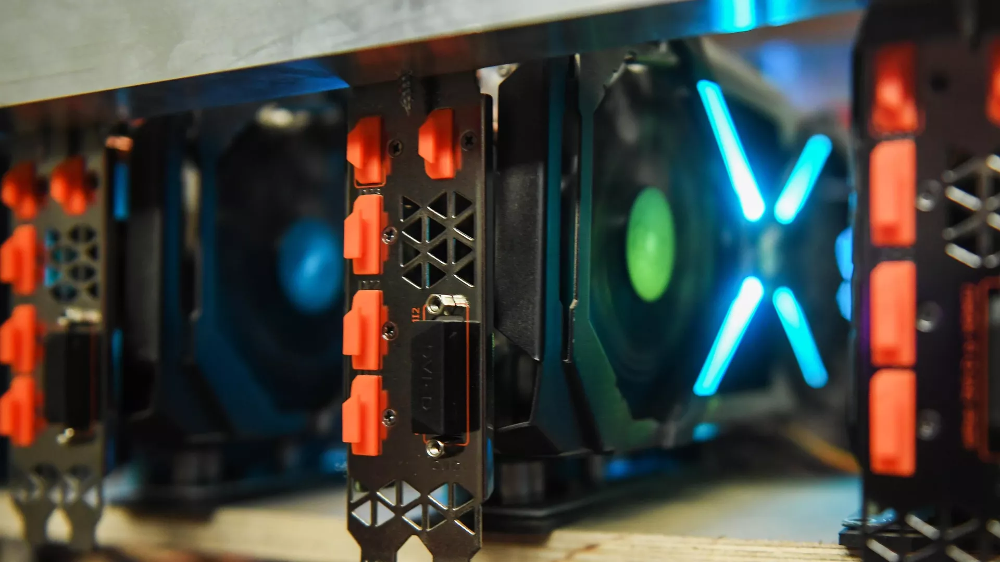
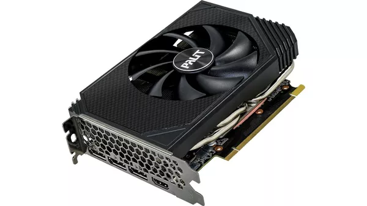
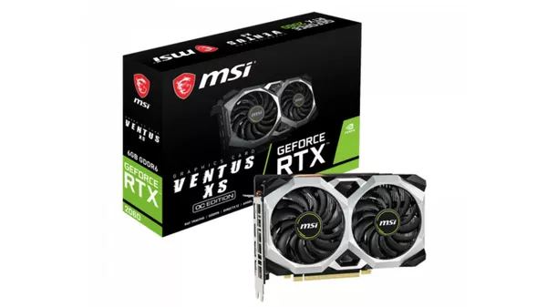
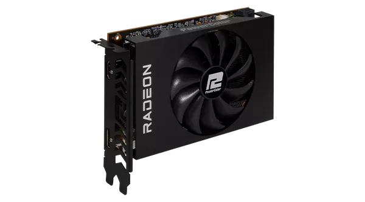
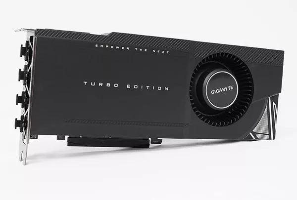
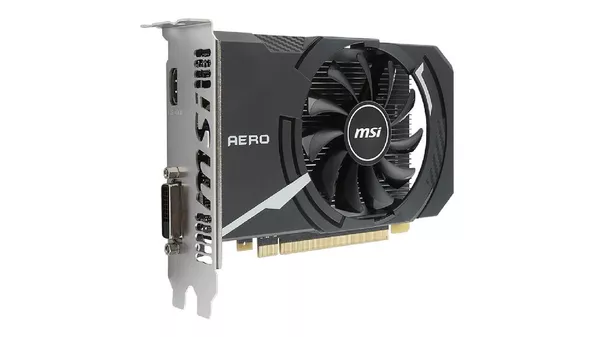
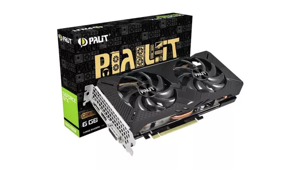

После майнинга: какую компьютерную видеокарту выбрать в этом году

Весной видекарты подешевели — в отличие от остальной электроники. Добывать криптовалюту теперь не так выгодно из-за падения курса основных "монет", бум майнинга подходит к концу, как и период спекулятивных цен на видеоускорители. Даже на фоне нарушения логистических цепочек карточки стали заметно доступнее. Самое время подумать об апгрейде компьютера.
Palit GeForce RTX 3050 StormX

Вокруг последней (и наиболее доступной) карты из семейства Ampere давно утихли страсти — в очередной раз геймеры не смогли отстоять рекомендованную розничную цену перед натиском многочисленных перекупщиков. Конечно, стоимость новинки даже в максимально упрощенном виде от вендора Palit далека от желаемой, но этот "входной билет" в мир современных AAA-игр сравнительно недорог.
Версия с одним вентилятором понравится не всем — шумная, а рабочая температура выше, чем у более крупных вариантов. Зато StormX очень компактная и встанет практически в любой корпус. У карточки восемь гигабайт быстрой памяти GDDR6, четыре разъема (один выход HDMI и DisplayPort). Поддерживает технологию NVIDIA DLSS, основанную на алгоритмах искусственного интеллекта, — это улучшает качество графики и увеличивает число кадров в секунду. Правда, RTX 3050 рассчитана исключительно на FHD-разрешение. Все, что лучше, заставит ускоритель работать на пределе возможностей.
ASUS Dual Radeon RX 6600

Актуальный "средний класс" из лагеря "красных" — AMD со своей архитектурой RDNA 2 изменила расклад на рынке видеокарт, особенно доступных. RX 6600 часто называют аналогом RTX 3060 из-за схожих параметров и результатов тестирования производительности в бенчмарках. Впрочем, в творении AMD не хватает продвинутой системы трассировки лучей и вышеупомянутой технологии DLSS. В версии ASUS у изделия — восемь гигабайт быстрой памяти, эффективная система охлаждения из двух вентиляторов и TDP на уровне 132 Вт.
Эта карта полюбилась майнерам эфириума, посредством разгона получавшим с нее солидную прибыль. На пике курса криптовалюты ускоритель окупался за шесть-восемь месяцев.
Геймеры же считают, что эта модель подойдет для современных игр в разрешении Full HD c 60 кадрами в секунду, а вот 2K-монитор может значительно снизить fps. В исполнении ASUS карточка отличается тишиной — вентиляторы срабатывают лишь под интенсивной нагрузкой.
MSI GeForce RTX 2060 VENTUS

Видеокарта, вышедшая в начале 2019-го, пользуется огромной популярностью, и вендоры не намерены снимать ее с производства. Отчасти такой успех связан с гигантским потенциалом для майнинга различных криптовалют — "шахтеры" буквально сметали эту модель с прилавков.
Сейчас RTX 2060 не дефицит, это просто хороший выбор для геймера, который не хочет разориться при покупке графического ускорителя. Архитектура NVIDIA предыдущего поколения, нет искусственного интеллекта, да и памяти "всего" шесть гигабайт. Но карточка до сих пор справляется с максимальными настройками графики в AAA-тайтлах, правда, только в разрешении Full HD. Изделие от MSI выделяется качественной, практически без брака сборкой, тихими вентиляторами. Любителям светодиодов понравится и контурная подсветка. Впрочем, энергопотребление относительно актуального поколения Ampere повышенное. Поэтому на блоке питания экономить не стоит.
PowerColor Radeon RX 6500 XT ITX

Базовый вариант современной карты AMD на RDNA 2 — версия от PowerColor отличается компактностью и единственным вентилятором, подходит для небольшого корпуса. Памяти немного (четыре гигабайта), хотя это быстрые GDDR6. Из-за габаритов тут лишь по одному выходу HDMI и DisplayPort, что ограничивает количество подключаемых мониторов.
В современных играх настройки выше средних поднимать не стоит, иначе и детализация, и фреймрейт пострадают. Компоновка с одним вентилятором делает эту модель довольно шумной — гул от карты отчетливо слышен из корпуса компьютера даже при небольшой нагрузке.
Но если использовать карточку не на пределе возможностей и запускать не самые продвинутые игры, то RX 6500 выглядит гораздо предпочтительнее предшественников благодаря невысокому энергопотреблению и перспективе долгой поддержки производителем. И, конечно, привлекает цена, которая снизилась за последние месяцы.
GIGABYTE GeForce RTX 3090 TURBO

Некогда флагманская карточка в семействе Ampere после выхода версии с приставкой Ti стала просто одной из самых производительных и дорогих на рынке. И вариант от GIGABYTE еще не так шокирует — конкуренты требуют за схожую конфигурацию на 30 процентов больше.
Здесь целых 24 ГБ видеопамяти стандарта GDDR6X — одно это повергает геймера в трепет. Реализованы практически все современные игровые фишки. Выдержит и гейминг в 8K, если, конечно, остальные компоненты компьютера потянут. Три (очень громких) вентилятора хорошо охлаждают, но некоторые пользователи дополняют их жидкостной системой. За выдающуюся производительность приходится платить размерами — карточка помещается лишь в компьютерный корпус формата BigTower. Есть полноценная трехлетняя гарантия от производителя, которая, правда, на майнеров не распространяется.
MSI GeForce GT 1030 AERO ITX

На другом ценовом полюсе — старая добрая GT 1030. Карты такого класса иронично называют "затычками", имея в виду временный характер использования подобного железа. Видеоадаптеру в 2022-м исполняется пять лет, но устройство продолжают покупать и цена даже подросла на фоне майнинг-бума.
Казалось бы, зачем сейчас видеокарта с двумя гигабайтами не очень-то и быстрой GDDR4-памяти? Производители процессоров из поколения в поколение заявляют о росте вычислительной мощности встроенного видеоядра. Но даже продвинутые AMD Ryzen не дотягивают в графике до слабой 1030, а Intel в 12-м поколении и этого не смог сделать. GT 1030 остается выбором пользователя, который не увлекается современными играми или вовсе ищет видеосистему для чипа без графического ядра.
Palit GeForce GTX 1660 SUPER GP

Эту карту представили в начале 2020-го. С тех пор она не утратила актуальности ни у геймеров, ни среди майнеров. "Шахтеры" ее любили за то, что не было блокировки добычи криптовалюты, а производительности хватало для создания мощных ферм.
Версия Palit выполнена на основе 12-нм архитектуры Turing с шестью гигабайтами видеопамяти. И она вполне "тянет" современные игры, особенно в разрешении Full HD. Карта способна работать одновременно с четырьмя мониторами.
Геймеры любят GeForce GTX 1660 SUPER за простую процедура "разгона", благодаря которой увеличивается частота и, как следствие, производительность. Но у "бесплатной" мощности есть оборотная сторона — перегрев, с чем встроенная система охлаждения не очень справляется.